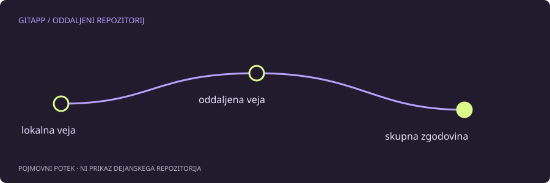

Kaj sporočilo dejansko pove
Sporočilo non-fast-forward običajno pomeni, da oddaljena veja vsebuje zgodovino, ki je tvoja lokalna veja še nima. Git zavrne posodobitev, ker bi običajno pošiljanje v takem primeru lahko skrilo oddaljene potrditve. To ni navodilo, da dodaj možnost za prisilno pošiljanje. Najprej je treba ugotoviti, kaj se je spremenilo in kdo uporablja vejo.
Predpostavimo, da sta iz iste začetne potrditve nastali dve novi potrditvi: eno si ustvaril lokalno, drugo je sodelavec poslal na strežnik. Obe sta veljavni. Cilj ni izbrisati ene strani, temveč izbrati dogovorjen način vključitve sprememb.
Začni s pregledom
Naslednji ukazi pregledajo stanje in pridobijo oddaljene reference. Ime oddaljenega repozitorija je v primeru origin; pred uporabo preveri, da velja tudi zate.
git status
git remote -v
git fetch origin
git log --oneline --graph --decorate --all -n 15fetch lahko posodobi oddaljene sledilne reference, ne združi pa samodejno prenesenih sprememb v tvojo trenutno vejo. Če želiš primerjati točno določeni veji, uporabi njuni dejanski imeni. Ne sklepaj, da se glavna veja vedno imenuje main.
Razvejanje ali samo zaostanek?
Če lokalna veja samo zaostaja in nima svojih dodatnih potrditev, je lahko primerna vključitev z možnostjo --ff-only. Če sta obe strani napredovali, moraš izbrati združevanje ali preurejanje po pravilih projekta. Pred vključevanjem poskrbi za nepovezane lokalne spremembe in preberi git status.
merge ohrani obstoječe potrditve in lahko doda združitveno potrditev. rebase ponovno uporabi lokalne potrditve na drugi osnovi in jim praviloma spremeni identifikatorje. Začetniku ni treba izbrati slednjega zgolj zato, ker je graf krajši. Pomembneje je, ali so bile te potrditve že objavljene in ali jih kdo uporablja.
Kaj preveriti po vključitvi
Poglej novo zgodovino, preveri spremembe in zaženi preizkuse projekta. Če je prišlo do spora, odprava označevalcev sama po sebi še ne zagotavlja pravilnega programa. Šele po uspešnem pregledu ponovi običajno pošiljanje.
Če se medtem oddaljena veja znova spremeni, je lahko pošiljanje ponovno zavrnjeno. To ni dokaz, da prejšnji postopek ni deloval; morda se je pridružila nova sprememba druge osebe.
Česa ne popravljaj na slepo
git push --force lahko prepiše oddaljeno zgodovino. Tudi --force-with-lease ni splošno dovoljenje za prepisovanje in ne nadomesti dogovora ekipe. Kadar ne veš, katere potrditve želiš ohraniti, se ustavi pri pregledu. Shrani identifikatorje pomembnih potrditev in vprašaj vzdrževalca projekta. Varnost tukaj pomeni razumeti posledice, ne izbrati najkrajši ukaz.
Vir in obseg
Referenca: uradni priročnik za git-push. Primeri so pripravljeni za učenje in niso opis posega v dejanski projekt. Preberi način preverjanja.